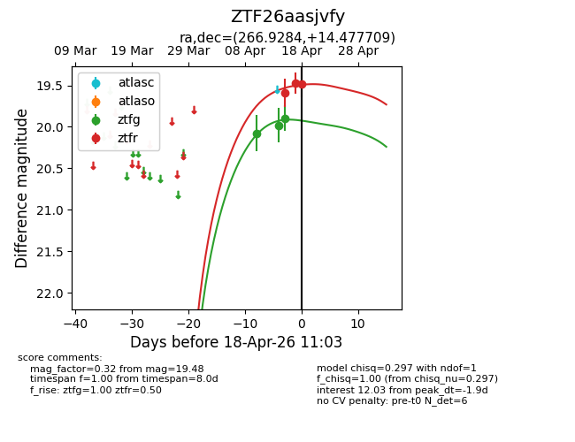
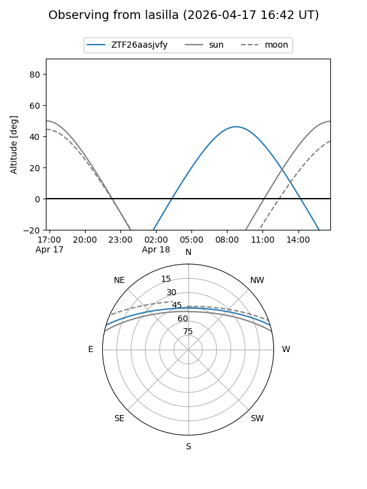
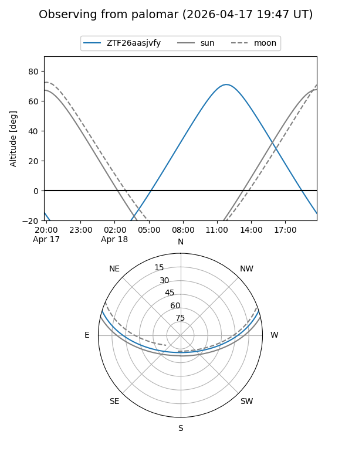
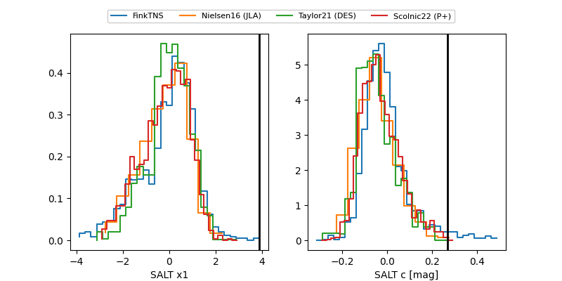

ZTF26aasjvfy
Target ZTF26aasjvfy at 2026-04-18 11:08
Aliases and brokers:
FINK: link
Lasair: link
ALeRCE: link
alt names
ZTF26aasjvfy (ztf,fink_ztf)
Coordinates:
equatorial (ra, dec) = 266.9284,+14.47771
equatorial (HMS+DMS) = 17:47:42.81,+14:28:39.75
galactic (l, b) = (39.1423,+20.51946)
Flags:
Photometry:
last ztfg=19.90, ztfr=19.48
3 ztfg, 3 ztfr detections
Lightcurve

Visibility


Additional plots
